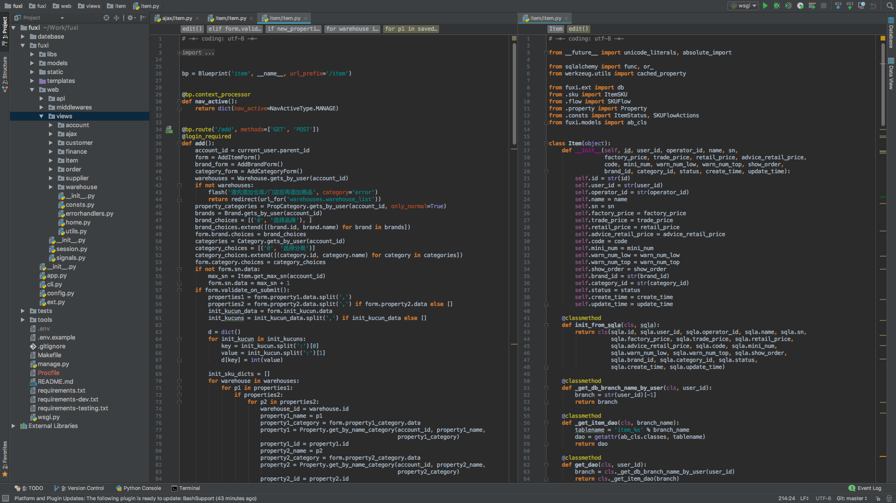
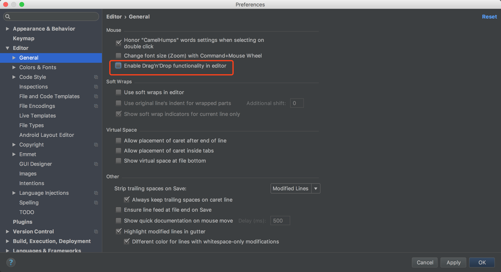
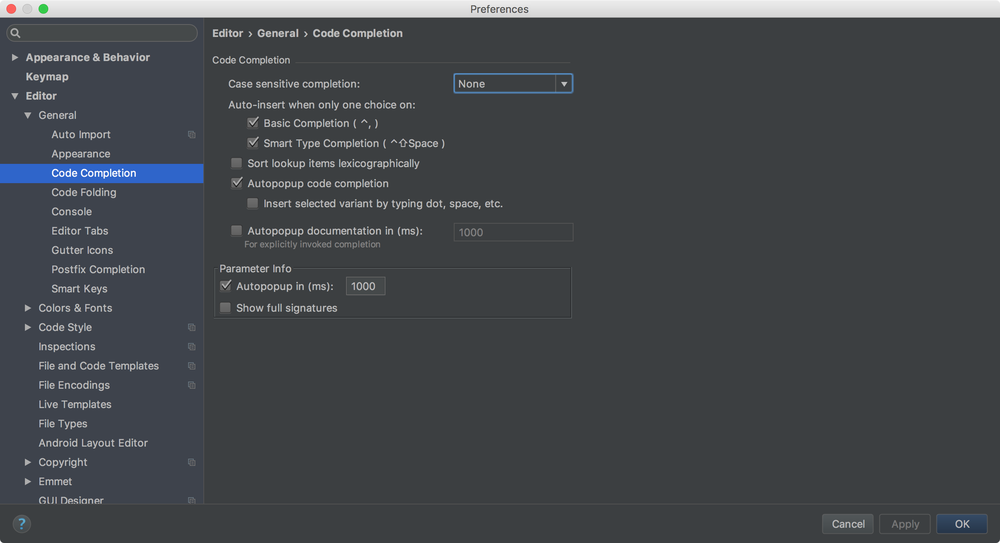
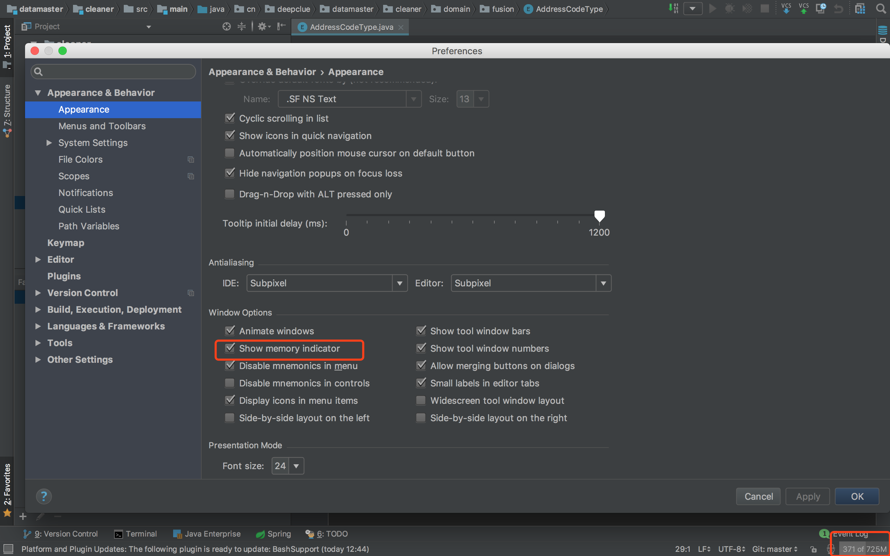
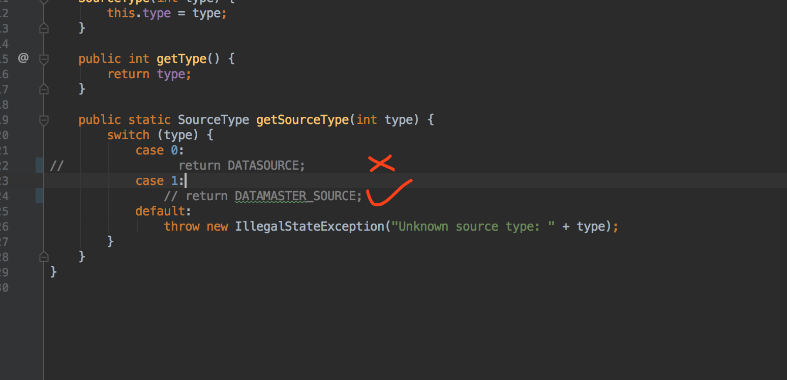
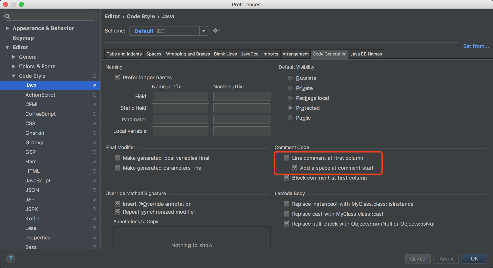
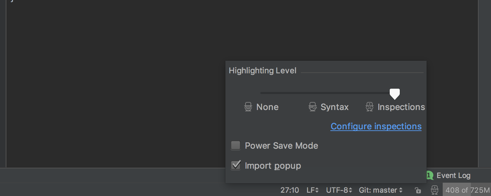
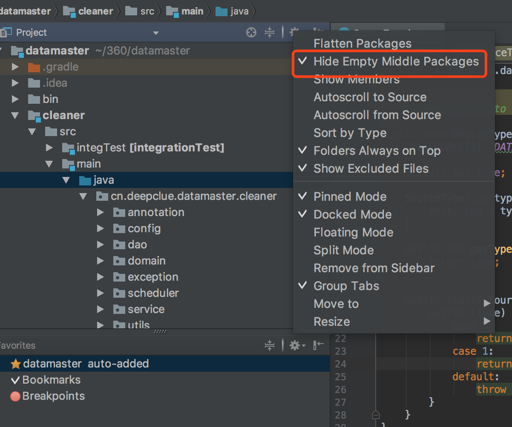
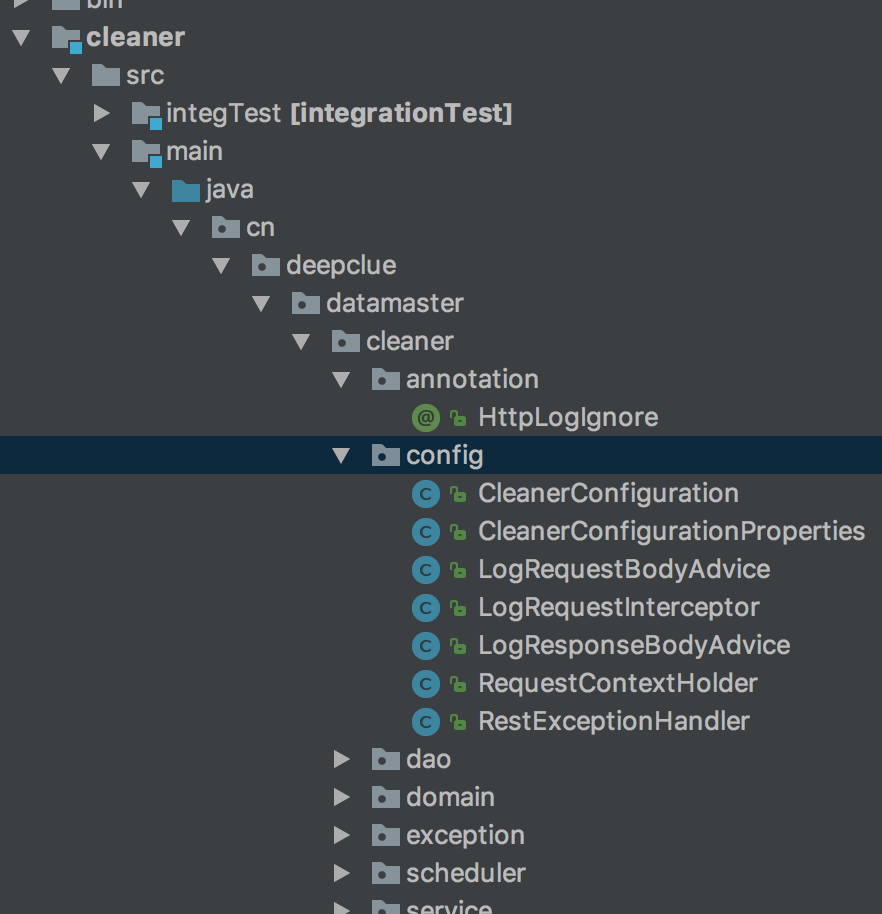

本指南理论上适用于 IntelliJ 家的所有产品。
首先来介绍下我自己定义的一些快捷键
左右分屏 (Extend Selection): Alt + w
写代码时，有时候需要同时打开多份文件，在 IDEA 中有两种分屏方式，一种是上下分，一种是左右分，我觉得上下的方式基本上看不了几行代码，所以我都是使用左右分。默认的快捷键需要用到方向键，但在 HHKB 中使用方向键还需要其他按键组合

代码补全 (Basic): Control + ,
默认的代码补全快捷键为 Control + Space，但是这个组合被我的 iTerm2 的弹出栏占用了，所以我改为了：Control + ,
合并 Git 的修改 (Merge Changes): Alt + m
Fetch 代码 (Fetch): Alt + f
git pull (Pull): Shift + Conmmand + p
因为 push 默认快捷键为 Shift + Command + k，但是 pull 没有默认快捷键，所以我用了这样的组合。
然后就是我的一些设置
关闭代码拖拽功能
代码拖拽是我非常不喜欢的功能，经常不小心误操作，如下图，去掉勾即可。

代码提示不区分大小写
默认的代码补全提示是会区分大小写的，比如我们在 Java 文件中输入 stringBuffer IDEA 是不会帮我们提示的，我们需要输入 StringBuffer 才行。
如图所示，将选项改为 None 即可。

显示内存使用情况
对于我这种 8G 内存的 Mac 用户来说，打开这个功能很有必要性，而且点击内存信息展示的那个条可以进行部分的内存回收

优化 Java 注释
使用 Command + / 快捷键可以对代码进行注释，IDEA 对 Java 代码的单行注释是把斜杠放在本行最开头，这种注释方式非常丑，所以我修改为将斜杠放在代码之前，并且加一个空格。


小技巧
点击右下角戴帽子的小人，可以选择不同的检查等级，在编辑大文件的时候，可以暂时将等级改为 None，提高流畅性

- Inspections 为最高等级检查，可以检查单词拼写，语法错误，变量使用，方法之间调用等
- Syntax 可以检查单词拼写，简单语法错误
- None 不设置检查
点击右下角戴帽子的小人，可以看到有一种叫做 Pover Save Mode(省电模式)，开启这个模式后 IDEA 会关掉代码检查和提示等功能，可以将这种模式作为一种「阅读模式」来使用。
在展示代码的包时，默认会将一些空的包进行折叠，如果更习惯属性结构的话，可以更具下图来修改的方式进行调整：

调整后
